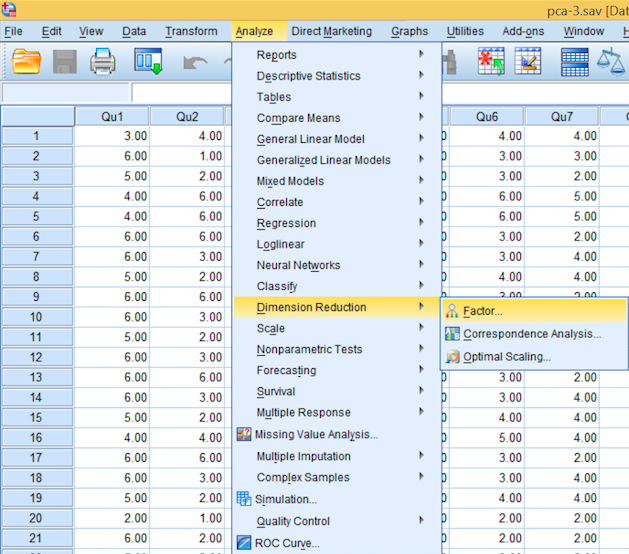
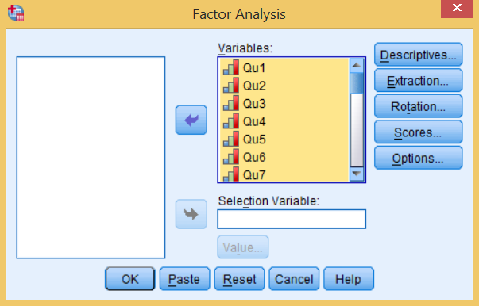
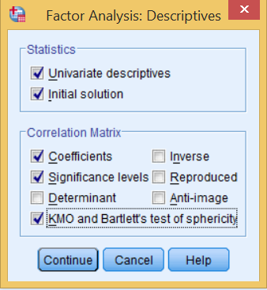
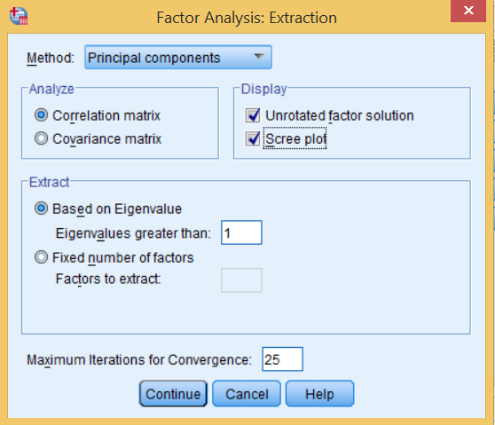
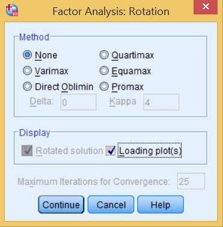
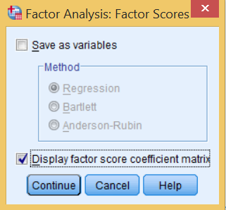
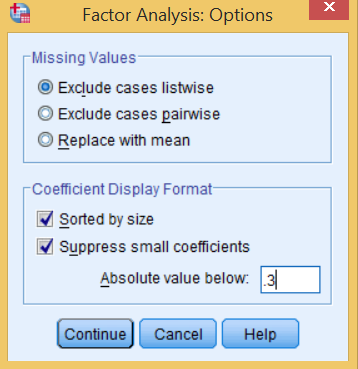

Principal Component Analysis and Factor Analysis in SPSS
Contents
PCA Description
Principal Component Analysis is a data mining technique used to identify "components". These are used to turn correlated variables into sets of linearly independent variables. The reason for the transformation is to include as much variation from the original variables in the uncorrelated variables. This is a way of isolating the most important parts of the data, those that explain the most variability in the original data. Having fewer variables which explain most of the variability in the dataset makes proceeding with further analysis much easier and faster. The steps to perform PCA in SPSS are outlined below and then the output will be analyzed below that.
PCA Steps
- Open SPSS and load in the data
- From the dropdown menu, select Analyze -> Dimension Reduction -> Factor Analysis.

3. Next, add all of the variables into the variables box by highlighting them all and clicking the arrow pointing to the box.

4. Now the buttons on the side will be the main focus for the next few steps. Descriptives is useful for getting a sense of the data. Select both checkboxes in the top section. In the bottom, choose Coefficients, Significance levels and KMO/Bartlett's test of sphericity. Choose to continue.

5. Next, in the Extraction window, choose to get an unrotated factor solution and a scree plot. On the bottom, choose to extract based on eigenvalue, and put in 1. This will only show the components which account for more than one variable.

6. Rotation is not used in PCA, it is instead used in factor analysis. See the rotation section below for more information. If you are completing a factor analysis, you may select a rotation method at this stage. The loading plots can be useful, so select to receive that in the output.

6. It is not necessary to save the scores as variables, but opt to display factor score coefficient matrix.

7. Lastly, in the options menu, leave the missing data selections as-is. In the bottom box, choose to sort by size and exclude coefficients with absolute values lower than 0.30.

PCA Output Interpretations
- Descriptive Statistics: Simply shows you the means and standard deviations of the observations you are testing. Also provides the number of cases used for each variable.
- KMO and Bartlett's Test: The KMO value ranges from zero to one, but should be greater than .6 to warrant continued analysis. Bartlett's test is designed to test whether the correlation matrix is the identity matrix. This test should also pass (reject the null hypothesis) to continue moving on. The chi-squared value should be large and the p-value small. Both should pass or you should not proceed.
- Correlation Matrix: The correlations between the different variables are shown here. With larger datasets, this will become less useful as it becomes more difficult to read.
- Communalities: This table shows the proportion of each variable accounted for by the components being used (those with eigenvalues greater than one). It can be though of as being comparable to the R-squared value when performing a regression. Initial values come from the original PCA, with extraction values coming from only the major components. These are the same values as those on the diagonal of the correlation matrix.
- Total Variance Explained: This is one of the most important outputs, showing the weight and prevalence of each component, as well as total variance accounted for by the components.
- Scree Plot: The scree plot shows the eigenvalues of each variable. Only eigenvalues over one are accepted, as they show that a variable accounts for more than its share of variance. This plot is an excellent way to visually identify eigenvalues and how significant they are. As a general rule, eigenvalues under one and connected linearly to the "tail" are not important.
- Component Matrix: This is also a very important table to look at. These values will be the loadings, the percent of variation explained by the component when it is applied to the variable. These will be further analyzed later in order to understand what the components represent.
- Component Plot: The component plot can sometimes be useful as a visual aid to identify separations in the clusters of variables. Sometimes it provides no useful information at all.
- Component Score Covariance Matrix: Since PCA makes its components orthogonal to eachother, this is simply a confirmation that none of the components vary with eachother. This should just show the identity matrix (Bartlett's test is to confirm that this matrix is the identity matrix).
- Factor Scores: These will be the values assigned to the scores of the components. The use of these is to compare the same components when evaluating variables of the same nature, but with different values.
Rotation
PCA: What to conclude from the results
The component matrix SPSS provides will the main focus in your analysis of the PCA output. Unrotated component matrices will often be difficult to read, due to being sorted descending based on component #1. This is where rotation becomes useful, it allows sorting of the results to reveal more meaningful configurations of the component matrix.
It may be difficult to make sense of components at first, since they are indicative only of variance explained, not what variables they explain, which is where a more qualitative analysis comes into play. The eigenvalues presented in the component matrix, also known as loadings, are to be revisited, as loading values under three typically are not used because of their reliability is called into doubt. When analyzing the loadings, use the rotated values if performing factor analysis, otherwise do not.
Analyzing the components can be difficult. The idea is to find a common theme associated with the greatest loadings on an individual component. For example, if the loadings on a component represent a distinct topic that can easily discerned, it is likely that all of those variables can be explained by that one component. When interpreting loadings which are associated with two or more components, they should be given less weight in your analysis, it should not be the deciding factor in your identification of the component's meaning. This may indicate that the variable is not suitable to analyze the same topic in the future.
With the components identified, the factor scores can be utilized for comparison of multiple datasets containing the same variables but with different observations.